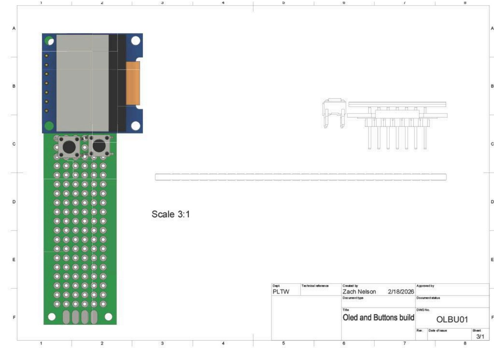
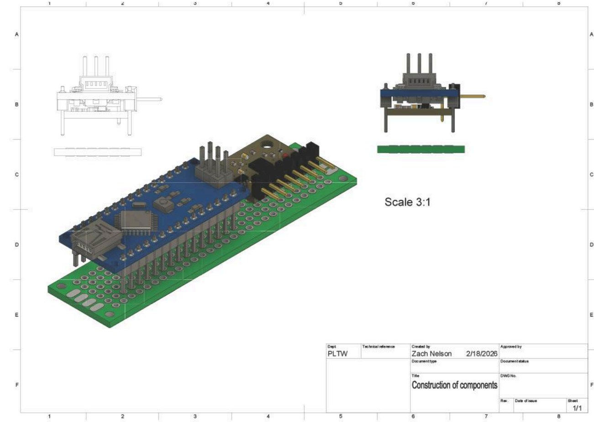
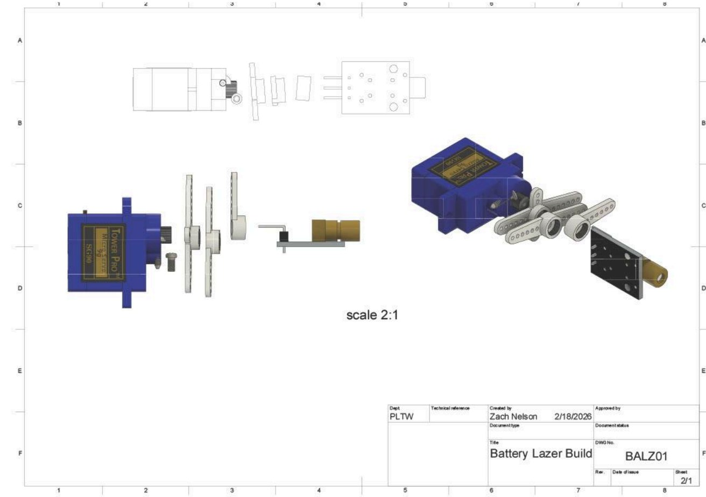
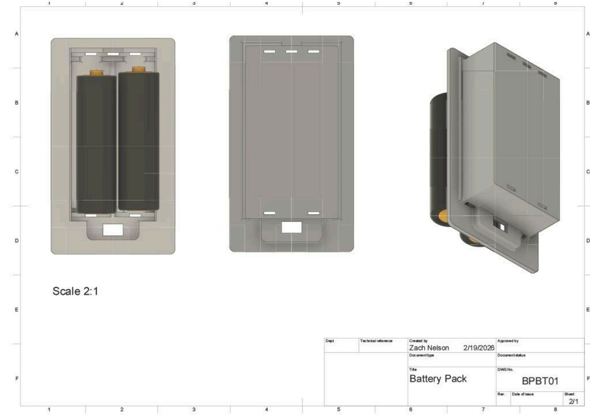
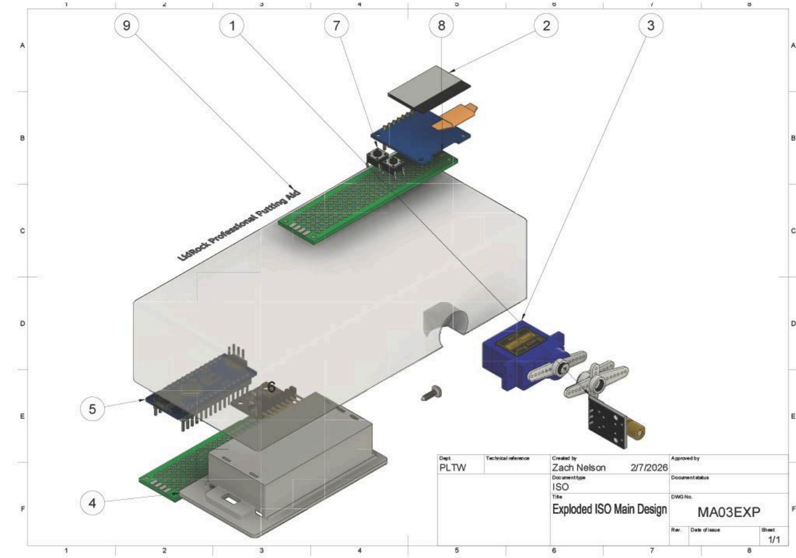
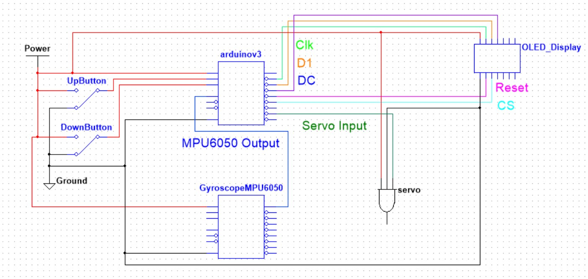
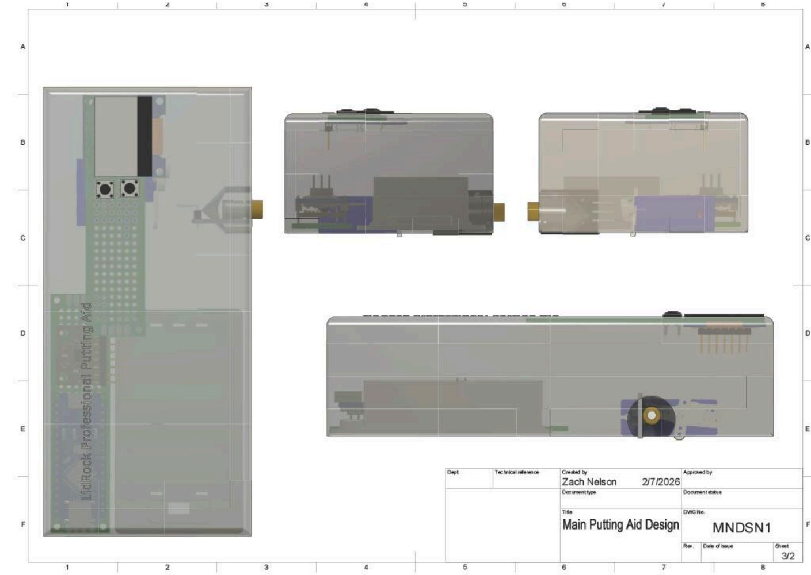

Element G
Construction of a Testable Prototype
I. Introduction
Problem Statement
In the United States, 44.13% of amateur golfers have 14.9+ handicaps and experience difficulty when reading the slopes of greens.1 This difficulty arises from novice golfers lacking experience with reading breaks and from courses having different types of cuts for the greens. This problem leaves high-handicap golfers unsatisfied with themselves, as these individuals consistently average four to five three-putts per 18 holes and end up shooting high scores. Addressing this issue requires that golf stakeholders, performance criteria, and functional requirements be accounted for. These different pieces of criteria ensure that the solution is extremely accurate, consistently reliable, and applicable to a large portion of the golfing industry. Additionally, several different designs were sketched and analyzed with the goal of finding a singular concept that will outcompete the current solutions on the market. Therefore, to create a testable prototype, it is essential to construct a device through resource planning, detailed/measurability assembly procedures, and specific functional requirements.
II. Bill of Materials
The Bill of Materials (BOM) shows all the needed parts for the green reading device. This shows each individual part, the quantity needed, the price, and the vendor from which it will be purchased. After the research done in the Design Concepts Generation, Analysis, and Selection phase, it was determined which parts were needed. These parts will ensure a device that accurately determines slope in the putting surface, solving the problem statement. The total cost for all parts came to $112.50 plus $25.98 for shipping.
| Item | QTY | Description | Vendor | Cost | Notes |
|---|---|---|---|---|---|
| Arduino | 1 | Arduino Uno R4 Minima - ABX00080. 32 Bit Microcontroller | Microcenter | $19.99 | Potentially used from school, but taking the Microcenter one |
| Servo Motor | 1 | Inland KS0209 Blue 9g Servo Motor | Microcenter | $6.99 | Potentially used from school, but taking the Microcenter one |
| LED DISPLAY | 1 | ELEGOO 3 PCS 0.96 Inch OLED display screen module. | Amazon | $10.00 | 3 OLED Displays/box. Shipping is free if using Amazon Prime or spending over $35. |
| Base | 1 | Green Putting Aid Device Outer Shell | NVHS | $0.00 | Will be 3D-printing the base of our product, costing close to nothing. |
| Accelerometer | 1 | SHILLEHTEK ADXL345 Accelerometer Sensor Module | Pre-Soldered High-Precision ADXL345 Accelerometer for Arduino Projects. Measures tilt/dynamic accelerations. Functions with Arduino | Amazon | $9.00 | Sold by ShillehTek, Business address in Chicago. Shipping is free if using Amazon Prime or spending over $35. |
| Button | 1 | Chanzon Tact Switch Tactile Push Button Micro Momentary Switch 6x6 mm x 6mm 2 pin 20 pcs | Amazon | $6.99 | Button for user inputs. Shipping is free if using Amazon Prime or spending over $35. |
| Battery Pack | 1 | ZRM&E 6V Power Box 4xAA Battery Holder Case with DC 5.5x2.1 Connector Mate with Barrel Jack Connector on Arduino | Amazon | $6.99 | Battery packs 6 volts. Shipping is free if using Amazon Prime or spending over $35. |
| Laser | 1 | 520nm Laser Module Industrial Green Laser Line Diode adjustable focus 5mw Line | Amazon | $16.99 | Great ratings, wireless, and quick delivery. Shipping is free if using Amazon Prime or spending over $35. |
| On/off switch | 1 | Mini Micro Slide Switch - 12pt 2 Position - 20pcs SPDT Toggle Switch | Amazon | $5.99 | Switch used to turn off devices. Shipping is free if using amazon prime or spending over $35. |
| Mini Breadboard kit | 1 | BOJACK 1Pcs 803 Tie points and 1 Pcs 400 Tie Points Solderless Breadboard and 65 Pcs Flexible Breadboard Jumper Wires and 6PCS 170 Points Mini Solderless Breadboard | Amazon | $8.99 | Shipping is free if using Amazon Prime or spending over $35. Breadboards are necessary for Arduino coding. |
| 5 Volt Regulator | 1 | BOJACK 10 Values 50 Pcs LM317 L7805 L7806 L7808 L7809 L7810 L7812 L7815 L7818 L7824 TO-220 Package High Current Positive Voltage Regulator Assortment Kit | Amazon | $12.99 | Shipping is free if using Amazon Prime or spending over $35. Regulators are necessary to keep only 5 volts going through arduino. |
| Screws and Spacers kit | 1 | 260 Pcs M3 Male Female Nylon Hex Spacer Standoffs Screws Nuts, Nylon Hex Threaded Pillar Spacer Standoffs Screws Nuts Assortment Kit for PCB Motherboard Circuit Board - Black | Amazon | $7.58 | Shipping is free if using Amazon Prime or spending over $35. Screw kit necessary to hold parts in place |
III. Tools and Equipment
This section consists of all the equipment necessary for the construction of the device. The chart specifies if the item is in the lab and the source of the item. If it does not, as well as outside source notes that will be helpful during the creation of the prototype. Each specific item/tool is required within the assembly construction and ensures the proper use of the device. Additionally, having some sort of understanding/familiarity with the different tools/equipment will reduce any sort of potential error during the assembly process and ensure that the prototype operates with efficiency and accuracy.
| Item | Exists in Lab (Y/N) | Source if not in Lab | Outside Source Notes |
|---|---|---|---|
| 3D Printer | Y | NVHS | Will be used very frequently for creating the base model of the device and holding the electrical parts within. |
| Philips Screwdriver | Y | NVHS | Used to piece the 3D printed parts together and to allow the servo motor to be structured to indicate the direction. |
| Asus Zenbook Laptop with Arduino Software | Y | NVHS | Required for coding the Arduino microcontroller and used to show the output from the accelerometer. |
| Soldering Iron (If permanent connections required) | Y | NVHS | Used to secure the loose wiring components and overall wiring incorporated into the final design. |
| Hot Glue Gun (Maybe non-electrical components) | Y | NVHS | Used when connecting small components inside the 3D printed base and to prevent any sort of movement when the green assisting device is being used. |
| Safety Glasses | Y | NVHS | Necessary to wear it while working with a soldering iron as the point is being heated up with the use of tin. |
| Multimeter | Y | NVHS | Required to measure the voltage of the battery pack in the system to ensure power is being supplied, with the optional ability to measure current/continuity (if needed). |
| Ruler/ Measuring Tape | Y | NVHS | Used to measure the distances of the components within the device to ensure everything fits inside a 3D printed base. |
| USB Cable (Arduino compatible) | N | Home | Extremely important for the code/debugging aspect of the Arduino device, as it is used to connect to the laptop and then allows for code to be uploaded. |
| Electrical Tape (Optional) | N | Home | Used while focusing on wire management to prevent the wires from interfering with one another, thus causing the Arduino to malfunction and create issues. |
IV. Needed Knowledge
Throughout the process of constructing a prototype, it is extremely crucial to have quick access to different knowledge of disciplines such as electronics, programming, designing, and building. The table below indicates which forms of knowledge are already known by the lead developers and the overall needs for a successful final prototype. Also highlights the sources of each specific piece of knowledge alongside whether or not additional individuals may need to be contacted in order to minimize any potential delays in the design process, whilst creating a prototype that meets the functional requirements.
| Item | Need Outside Assistance (Y/N) | Source | Outside Source Notes |
|---|---|---|---|
| Arduino Programming / Coding and Debugging | N | Team Experience | The members of the group both have some form of coding experience in the past few years. |
| Understanding of Golf Green Physics and Correct Reading of Slope | N | Team Experience | The members of the group both have an understanding of where the golf ball would roll on a putting green based on years and years of experience. |
| 3D Cad/Fusion Modeling | N | Team Experience | The group members have prior experience in using fusion to 3d model the prototype designs and to create a successful device. |
| Accelerometer Calibration / Interpretation of Readings | Y | Online Sources/ PLTW Faculty | These sources/individuals can give great insight into how to construct the accelerometer aspect of this design. |
| Power Distribution from Battery Pack | N | Team Experience | All group members have an understanding of how to use double AA batteries and measure the power coming from the battery pack. |
| Servo Motor Placement and Functionality | N | Team Experience | The group members have prior experience with the use of servo motors and their compatibility with Arduino. |
| Circuit Recognition and Wiring | N | Team Experience | Everybody in the group has taken some form of digital electronics class in the past and has knowledge of using circuits and wiring arduinos/breadboards. |
| Adding Display on an OLED Screen | Y | Online Sources/ PLTW Faculty | Members of the source listed to the left can assist in describing how to use an OLED display and how to show the output from the Arduino/accelerometer. |
| Data Collection and Performance Evaluation | N | Team Experience | These members of the group understand how to collect the data from the finalized prototype and recognize how well the device is performing. |
| Knowledge of Greens Changing Via Course | N | Team Experience | Everybody apart of the project has the knowledge of the different types of greens, changing the direction the ball rolls, and the impact on the device usability. |
| Soldering/Wiring | N | Team Experience | Members of this group have knowledge of soldering and creating permanent wiring. There is also knowledge of wiring the components of this design. |
V. Build Procedure
Below is the build procedure, a step-by-step guide to constructing this device. This provides detailed instructions on how each component is put together, how each tool is used, and how everything is connected. This allows manufacturers to understand how this device is assembled.
1. Installation of Buttons and OLED Display onto PCB Board

- Align the OLED display module with the holes near the top of the PCB, ensuring the screen is properly attached and facing downward, and that the PCB holes are holding the device in place.
- Solder the pins on the OLED display to make sure that the display is not movable.
- Next, align the buttons to properly sit in the PCB holes to the left of the OLED display, aligned with each other, as shown in the figure above.
- Solder the pins on the push buttons to make sure that the display is not able to move.
- Inspect for bridging that could have occurred during soldering and check that the devices are properly connected and secure.
2. Installation of Arduino and Gyroscope onto PCB Board

- Mount the Arduino Nano to the PCB Board, making sure there is correct alignment and support.
- Solder the pins of the Arduino Nano in place using a soldering iron so that the Arduino is not able to move around.
- Install the MPU-6050 Gyroscope on the PCB in the correct orientation to the right of the Arduino, as shown in Figure 5.2 above.
- Solder the pins of the Gyroscope onto the PCB board so that the device is not able to move freely, and make sure that the ground and VCC are connected well.
- Verify that there is spacing between the Arduino and the Gyroscope for clearance and wiring.
3. Connection of Servo Motor with Laser Transmitter Device

- Attach the laser module to the servo using epoxy. Wait for the epoxy to properly dry and securely attach the two devices.
- Make sure that the laser is properly aligned with the shaft axis of the servo so that the laser will be able to rotate as intended.
- Next, attach the signal wire of the servo to the output pin of the Arduino so that the Arduino can control the device.
- Test the rotation of the servo to ensure that the laser is able to move properly by using simple code.
4. Power Component of Device (Battery Pack)

- Insert the AA batteries into the holder, making sure that the batteries are turned in the correct orientation.
- Attach the back wall of the holder to the holder and screw on 2 M2 screws into the respective holes on the bottom side of the holder.
- Verify the voltage from the battery pack using a voltmeter.
- Connect the ground lead of the battery pack with the ground rail of the other components.
5. Place all separate Sub-Units into their Respective Section on the Devices Shell

- Insert the assembled PCB board from step 1 into the upper right section of the device shell, sitting at the top of the shell.
- Secure this PCB board using M2 screws to keep the device from moving or taking up too much space.
- Insert the assembled PCB board from step 2, which contains the Arduino and Gyroscope, into the floor of the top left corner of the shell, as shown in the figure above.
- Secure this PCB board using M2 screws to keep the device from moving or taking up too much space.
- Install the battery pack into the floor of the bottom left corner of the shell, securing it with hot glue adhesive.
- Position the servo motor into its mounting position so that the laser module sticks out of the hole in the shell of the device shown in the figure above.
- Close the shell enclosure and fasten it securely with M2 screws.
6. Wiring the Device (Diagram of Multism)

- Most wires can be connected through male/female connections
- Wires must be soldered to the battery pack*
- Wiring begins from the power source (battery pack)
- A power wire must flow to both buttons, the Arduino, the servo, the Gyroscope, and the OLED display
- Ground wires are attached to all components: (buttons/Arduino/Gyroscope/OLED/servo), which feed back to the negative terminal in the battery pack.
- The Arduino must have all its inputs wired into the correct ports (Gyroscope/Button Outputs)
- Arduino Outputs must be wired to the OLED display (Clk/D1/DC/CS/RESET)
- Wire the last Arduino Output to the servo motor’s final port
7. Coding the Arduino
- Connect an equipped device with Arduino software to the Arduino
- Code takes in inputs from buttons/Gyroscope to perform output tasks on both the OLED display and the servo motor
- Code takes into account the tilt of the device (from the Gyroscope) and distance to the hole (from buttons), to find the ideal putt line
- Code finally constructs the angle at which the servo must rotate the laser.
8. Final Device Product

- This fully assembled golf putting aid uses an Arduino Nano, MPU-6050 Gyroscope, OLED display, push button inputs, laser module, servo motor, and battery power system all inside of a 3D printed shell.
- Once this build procedure is completed, all components within this device will be securely mounted and wired properly, creating a reliable slope reading device.
- Test this device through powering it on and making sure that every component of the device works properly and then continue on to the next stages of the design.
VI. Conclusion
To ensure a successful build of this device’s first prototype and any future prototypes, clear instructions must be provided for assembly. First, a Bill of Materials was developed. This lists out every needed part, where it can be bought/found, and both its cost to buy and ship. This ensures all pieces are acquired before the building process begins. Second, all tools and equipment needed in the build process were listed. Within this list, it is explained whether these tools are already available in the build lab, and if not, where the tools can be acquired. Third, it is listed where all the different types of expertise are needed in the build process. It is explained what is needed, who can perform this task, and who might need to assist if the team does not already have this knowledge. Finally, a full build plan is provided. This gives step-by-step instructions on how to assemble each piece of this device, where in the device it goes, and how it connects to other components in this device. The build plan is clear and easy to follow, allowing for a simple building process. Additionally, the plan incorporates many different diagrams both from 3D modeling and multisim visuals to precisely represent and describe the assembly process. Overall, all of this ensures a successful development of the prototype.
-
Cunningham, Kevin. “Here’s How Your Handicap Index Stacks up against Golfers in the United States.” Golf, 9 Sept. 2020, golf.com/news/how-your-handicap-index-compares/. ↩